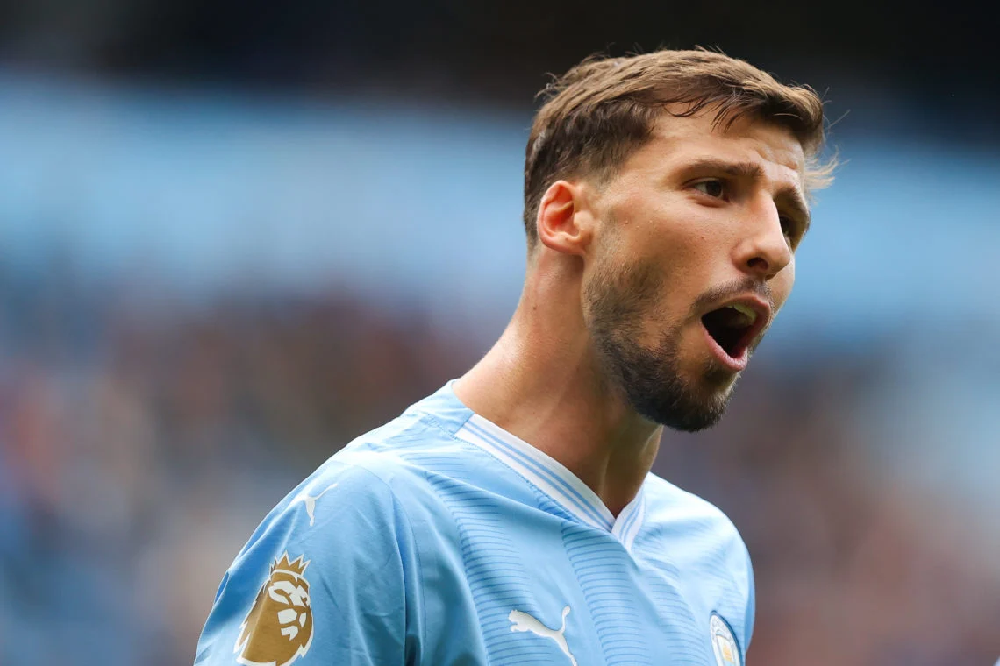

Stoper, takımın kalesinin ilk savunucusu ve oyunun görünmez mimarıdır. Hava topu, markaj, top çıkarma ve oyun kurma. Dünyanın en iyi stoperlerinden öğren, kendi savunma stilini geliştir.

Dünyanın en iyi stoperlerinin maç içi kararlarını, müdahalelerini ve fiziksel oyunlarını incele.
Sağ ayak, Man City lideri, fiziksel stoper oyunu.
Sağ ayak, Liverpool, hız ve güçlü ikili mücadeleler.
Sağ ayak, güçlü ve atletik müdahaleler.
Sağ ayak, Barcelona, atletik yapı ve 1v1 markaj uzmanlığı.
Sağ ayak, Barcelona genç yetenek, oyun okuma ustası.
Sağ ayak, Arsenal, soğukkanlı top çıkarma ve hız.
Sağ ayak, Tottenham, agresif ve sert müdahale tarzı.
Sol ayak, Arsenal, hava topu ve fiziksel savunma.
Sol ayak, Man United, çevik ve agresif küçük stoper.
Sol ayak, Inter, oyun kurma ve top çıkarma ustası.
Sol ayak, Dortmund, top çıkarma ve hava hakimiyeti.
Sol ayak, Barcelona, deneyimli ve sert stoper.
Right foot — Man City lideri.
Right foot — Liverpool, hız ve güç.
Right foot — atletik müdahaleler.
Right foot — Barcelona, 1v1 markaj.
Right foot — Barcelona, oyun okuma.
Right foot — Arsenal, soğukkanlı top çıkarma.
Right foot — Tottenham, agresif tarz.
Left foot — Arsenal, hava topu ve fizik.
Left foot — Man United, çevik ve agresif.
Left foot — Inter, oyun kurma.
Left foot — Dortmund, top çıkarma.
Left foot — Barcelona, deneyimli stoper.
Sana özel program oluşturmak için 5 kısa soru cevapla. AI asistanın analiz etsin, haftalık savunma planını hazırlasın.
Cevapların değerlendiriliyor
Analiz sonuçlarına göre haftalık planın hazır.
Antrenmanını bitirdikten sonra butona bas. Seri günün (🔥) ve İstatistiklerim → Antrenman Günlüğü otomatik işaretlenir. İşaret geri alınamaz.